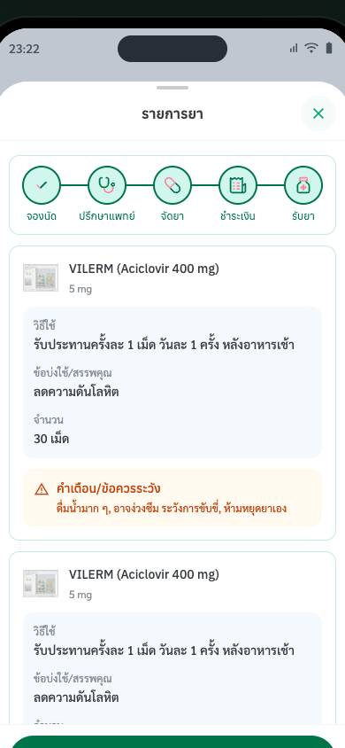

4 · ทำต่อไม่ได้U01 · T4 · H5 ป้องกันความผิดพลาด
รายการยาแสดง VILERM (Aciclovir 400 mg) ขนาด 5 mg ข้อบ่งใช้ 'ลดความดันโลหิต' ซ้ำ 2 รายการ และไม่ตรงกับคำสั่งแพทย์ในหน้าเดียวกัน
- พบโดย
- ป้าสมศรี · คุณฝน · พี่เอก · Mr. Aung (4)
- ข้อเสนอ
- ให้ชื่อยา · ขนาด · ข้อบ่งใช้มาจากรายการเดียวกับคำสั่งแพทย์ · ไม่แสดงยาซ้ำ